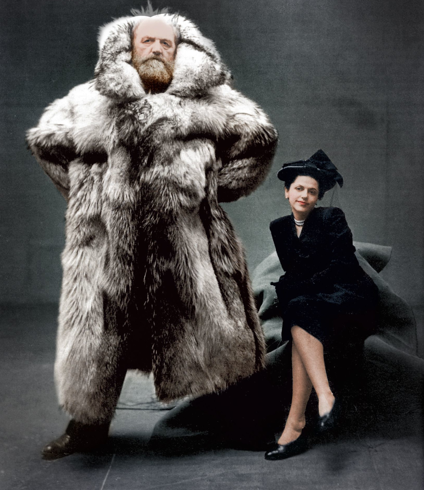

The Explorer
Tuesday • August 27th 2019 • 11:57:41 pm
The Explorer

Danish explorer Peter Freuchen and his wife, Dagmar Cohn (1947)
How Amelia Earhart Did It
Amelia Earhart: Queen Of The Air
Underwater Discovery and Adventure: The Story of Jacques Cousteau
World Without Sun von Jaques Cousteau
Shackleton's Voyage of Endurance
Retracing Ernest Shackleton's Doomed Expedition To Cross The Antarctic
Edmund Hillary and Tenzing Norgay climb Everest - 1953 archive video
Sir Edmund Hillary Interviewed by Wade Davis
Learn to travel -- travel to learn: Robin Esrock at TEDxVancouver
How to travel the world with almost no money by Tomislav Perko
Travel More & Buy Less. by Luis Vargas
The value of travel by Rick Steves
How adventure makes you smarter, stronger, and attractive by Tyler Tervooren
I'm home: How 10 years of travel helped me find belonging by Phil Cha
Say 'yes' to your adventure: Matthew Trinetti
Live Life to the fullest by Nick Martin
Barèges, the steep one
What It Takes to Be an Adventurer
What It Means To Be An Adventure Photographer
Welcome to an Adventurer’s Year-Round Paradise: British Columbia
My Life As an Adventure Photographer
A Quest to Find Canada’s Elusive Coastal Wolf
My Life As an Adventure Filmmaker and Photographer (Part 1)
My Life As an Adventure Filmmaker and Photographer (Part 2)
After the Avalanche: Life as an Adventure Photographer With PTSD (Part 1)
After the Avalanche: Life as an Adventure Photographer With PTSD (Part 2)
Hardangervidda expedition, Norway #1
Arctic Pulk Expedition - crossing the Finnmark Plateau, Norway
This Explorer Has Seen More Of The World Than Anyone Currently Alive
Explorer Mike Horn Speaks at EOS Global Hackathon Grand Finale
TEDxPearlRiver - Mike Horn - Pangea: Exploring the Limits
Journey to the Deep with James Cameron - Nierenberg Prize 2013
Titanic: The Final Word With James Cameron - Full Documentary in HD
The Lost Forest | Nobel Peace Prize Shorts
Meet the 2013 Adventurers of the Year
My life as a professional adventurer by Chuck Berry
Michigan Rocks
Rock Hunting the Beach at Rockport State Park
Relic Recoverist
Metal Detecting for Coins

Mudlarking with Nicola White
YouTube Channel Visit The Mudlark chapter for more Mudlarking with Nicola White and others.
Mudlarking The River Thames - THREE mystery finds

Aquachigger
OMG! I Found A Huge Silver Treasure Hoard Metal Detecting!

WW2 History Hunter
Forgotten bunker found and opened